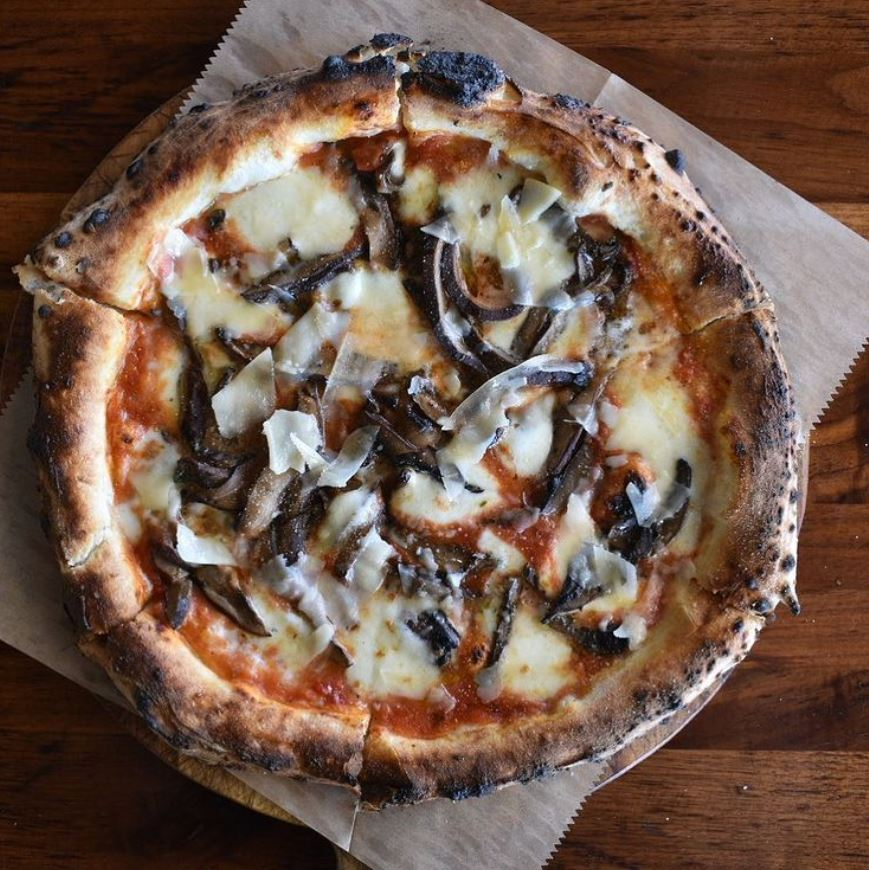

Pizza

Mushrooms are always a favorite
The BEST pizza for all cheese and mushroom lovers! Loaded with 2 types of cheese and garlic herb sautéed mushrooms!! AMAZING.
Ingredients
- 6 large portobellos, cleaned and stems removed
- 2 tbsp. extra-virgin olive oil
Kosher salt
- Freshly ground black pepper
- 1 c. pizza sauce
- 1/2 c. shredded mozzarella
- 1/4 c. freshly grated Parmesan
- 1/2 c. mini pepperoni
- 1/2 tsp. dried oregano
- Red pepper flakes
Sliced basil, for serving
the steps needed for making the pizza
- Preheat oven to 400° and spray a baking sheet with cooking spray. Place mushrooms on baking sheet and toss with with oil, salt, and pepper. Bake for 10 minutes.
- Top mushrooms with pizza sauce then mozzarella and pepperoni. Sprinkle with oregano and red pepper flakes. Bake again until sauce is bubbly and cheese is melted, 10 minutes. Garnish with basil to serve.